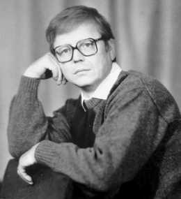

ВОЛОДИМИР НАУМОВ
Затмение
Вірші
Увага! Книга написана російською мовою!
Владимир Наумов
ЗАТМЕНИЕ
Стихи, поэма
Под редакцией Л.П. Стрельника.
Издание осуществлено за счет средств автора.
Новый сборник стихов и художественно0публицистической поэмы «Затмение», которая дала название книге, - отображают день сегодняшний, его волнения, трудности, а подчас и противоречия жизненной логике. Об этом автор размышляет и говорит с читателями откровенно, возможно, в некоторой степени эмоционально, с чувством горечи, но на оптимистической ноте.
Рецензенты: Г.Г. Половинко, И.Д. Низовой, члены Союза писателей Украины.
(С) В.А. Наумов, 1996
Луганская областная писательская организация Союза писателей Украины.
ИЗ РЕЦЕНЗИЙ
«Затмение» - вторая книга лирики В.А. Наумова, многие стихотворения которой говорят, что поэт постоянно работает, его мастерство растёт от стихотворения к стихотворению. Здесь вы найдёте всё то, что нас волнует, что всем нам болит. И пусть не всегда можно разделить мнение автора на ту или иную жизненную ситуацию, пусть не всегда эти взгляды облечены в высокую художественную ткань – мы всё же чувствуем, что автор искренен, что он, во что бы то ни стало, пытается разобраться в происходящем, поделиться с нами своими мыслями…
Г.ПОЛОВИНКО,
член Союза писателей Украины
…И, тем не менее, лучшие стихи сборника свидетельствуют о том, что Владимир Наумов значительно вырос по сравнению со своим первым сборником. У него как бы появилось второе дыхание, освященное жизненным опытом, наблюдательностью, желанием философски осмыслить самые что ни на есть будничные моменты, выделяя из них главное, непреходящее, составляющее нравственную и духовную ценность человека. А это, в свою очередь, говорит о том, что у этой книги будут свои читатели, которым она нужна…
И.Д.НИЗОВОЙ,
член Союза писателей Украины
***
Не устал от житейских забот,
Недостатков, раздоров, тревоги, –
Ведь плевалися кровью и боги,
Чем же лучше мой, грешника рот?
Не ропщу, значит, всё заслужил…
Может быть, это главная ставка:
Из моих неразорванных жил
Роковая совьётся удавка.
***
СТЫДНО МНЕ
Больно мне и жжёт стыдоба
За себя и за детей.
И не выбраться до гроба
Мне из нравственных сетей.
Ведь хватает за живое
То, как мы теперь живём, –
В положении изгоев,
Но танцуем и поём.
Мы дошли почти «до ручки» –
Попрошайничать пошли.
Вязнем в западной липучке
За посылки и кули.
За старьё, что нам подкинут,
Гордость втаптываем в грязь.
Развели болтаньем тину,
Распустили дико мразь…
В магазинах – боль и давки,
Бьют навылет, бьют на влёт.
Даже слон в посудной лавке
Ничего не разобьёт.
Больно мне и жжёт стыдоба
За страну и за народ.
Это чья же там утроба
Всё, что вырастили, жрёт?
Прячет кто, по чьей указке
Он народа хлеб и сыр?
Чьи бессовестные глазки
Видят в доме нашем тир?
А у нас одни обеты –
Неудобны, но несём…
И почти что всей планеты
Мы имеем чернозём.
А леса, а наши недра,
А народ – бесценный клад.
Нет же, кто-то ищет ветра,
Чтоб покруче веял смрад.
Чтобы внук плевал на деда,
Лиха чтоб узнали фунт…
О, не дай нам, Бог поведать
Безоглядный русский бунт!
Дай великого терпенья,
Мира дай моей земле,
Мне – горенья, а не тленья,
Умереть не дай во зле.
Март, 1991 г.
***
НАДЕЖДА
О, не уверен я в грядущем дне, А ведь меня в обратном уверяли… Но речь-то, речь совсем не обо мне, Хотя мои и сузилися дали. Да что там дали – завтрашний рассвет Покрыт уже неведомым туманом… Дай, Бог, нам день и пищу на обед, И встретить вечер не с пустым карманом, Когда на клочья – жизненный устой… А что же дети, ну, а внуки – что же? Ведь мы – их корни, будто звук пустой, И это сердце совестливость гложет. Мы – жили. Да! А для чего живём? «Понятно всем», – ответят с удивленьем. О люди, люди! Золотым жнивьём Босым не будешь бегать с наслажденьем. Куда бежать? Начертано для нас Полёт и выстрел, тернии и звёзды, Обмана бас и вопиющий глас, Трава на завтрак и на ужин – тосты. …Прости, мой сын, что я блуждал во тьме, Но и рассвет нам будет резать очи… И пусть придёт уверенность ко мне В грядущий день, среди атласной ночи…
Октябрь 1991 г.
***
РОВЕСНИКАМ
Мы с вами Зимнего не брали, Не грели кровью лёд Кронштадта. Не ставил нас товарищ Сталин Стрелками на заградотрядах. Мы с вами это не познали, И многому нас не учили. Нас увлекали чьи-то дали, Да что творил Альенде в Чили. Мы волновались и болели За Юг и Север, синих, красных. Нас разделяли параллели Межою гласных и согласных. Однажды данная присяга, Как пост бессменный караула – Сержантами входили в Прагу, Полковниками – из Кабула. Пусть где-то были мы не правы: Правели – там, а здесь – левели, Но направленье переправы Не изменяли из-за цели. Мы вдаль смотрели, а под носом Что назревало – проморгали… И стала наша жизнь курьезом И тупиком на магистрали, – Выходит, не туда телегу Тянули, братцы, в исступлении?.. Есть оправданье и побегу, Как польза есть и в отступлении. Но это ли всему основа? Не это стержень или веха! За нами еще наше слово И сотворение успеха.
Декабрь, 1991 г.
***
ПЫЛЬ ОТЕЧЕСТВА
Уезжают. Бегут без оглядки, И на то есть причина своя… Был птенец недоразвито гадкий, Только вырос давно в соловья. Он запел – аж мурашки по коже, Соловеют глаза от слезы. Ну, на что же всё это похоже – Ведь не будешь рыдать от бузы?! Значит, есть и любовь, и горчинка К той земле, что оставил теперь, – Дорогой получилась овчинка – По цене колоссальных потерь. Ветры доли бывают капризны И уводят, порою, с дорог… Пыль Отечества, землю Отчизны Унесешь на подошвах сапог. Даже слой незначительный этот, Словно лакмус ошибок и проб, Изболевшее сердце поэта Не оставит чужбине по гроб.
Январь, 1992 г.
***
Может, осень что-то мне открыла, Может, просто изморозь в душе Остудила сединою крыла На крутом и пылком вираже. Только больно сразу петь и плакать, С полдороги, не устав, сойти… Ударяясь о земную мякоть, Познаёшь всю истинность пути. Понимаю: годы не напрасно Очертили срок – пора созреть. Потому ли так всегда прекрасна Зрелых яблонь лиственная медь?
Август, 1989 г. ***ЗАЧЕМ ДЕЛИТЬ?
Забросим эту канитель. Зачем делить неразделимость? – У нас была ведь совместимость И в день погожий, и в метель. Но те, кому не по нутру Славян нервущиеся узы, – Взрывают ненависти шлюзы И шевелят смердящий труп; Копают в мелочном дерьме, Как блох – выискивают язвы И не поймут того, что разве Мы жили не в одной тюрьме?! Судья исчез, поджавши хвост, Ушел со службы надзиратель, – Но кто теперь тот неприятель И ждёт кого сырой погост? Да, мы хороним же себя, Свою семью, отца и матерь, – Друг друга вышвернем на паперть… Бессмыслицею истреблять. Январь, 1992 г. *** Такое время, что возьми С ума сойди – и то полдела, Ложися бренными костьми – Не перекроешь беспредела. Хоть рви с макушки волоса, Рыдай иль смейся – все до фени, – Страстей клубится полоса И явственней пороков тени… Не знаешь, из чего начать, Чтоб смыть чешуйчатость лукавства, Как рабскую содрать печать, От немоты найти лекарства, – Ведь совесть катит под уклон, Как перед боем стойкость труса… Спросить совета у икон Иль ждать пришествия Иисуса?.. Апрель, 1992 г. ***ЯВИСЬ, ЕДИНСТВЕННЫЙ
Где же тот, единственно святой, Что в беде земля моя творила? Над народом простирал он крыла И росил его живой водой. Где же тот, единственный пророк, Что умеет, укрепивши веру, Подсказать для чувственности меру На еще космический виток? Где же тот, единственный мудрец, Что своею пламенною речью Обогреет, словно в стужу печью, И зажжёт огни людских сердец? Человек, откликнись, отзовись! Час пришел и тягостный, и мерзкий, Освети туманящую высь Преподобный Сергий Радонежский!.. Май, 1992 г. *** И снова то же, что вчера, Занудных слов пустопорожность, В простом выискивая сложность, – Бранимся, словно кучера. А суть – в яичной скорлупе, Но зла – на целый инкубатор: Диктатор – тот, тот – император, Тот – глуп, а тот – еще глупей. Не сохнет пена на губах, Подножке следует подножка… Ещё чуть-чуть, ещё немножко – И предки вскинутся в гробах. Май, 1992 г. ***ЧЬЯ МУЗЫКА?
Запустенье и простуда, И чахотность идей – Все берется ниоткуда, – Из глуши да пустырей. Насаждая вонь отравы И припудривши мозги, – Все теперь как будто правы, Кроме самой мелюзги. Что же нам, простым иванам, Всё же помнящим родство?.. Стал товарищ нынче паном, Демократом! Каково? Косность обветшалой мысли В тину падает болот И порыв нетленной жизни Снова сделал поворот… Что же мы – марионетки, Без мозгов и языка? Паутины – те же нитки, Ну, а чья же Музыка? Январь, 1993 г. ***МЫСЛИ ВСЛУХ
Я понимаю: месть – есть месть, За это шли на эшафоты. Но существует же и честь, И фонари, и катафоты. У каждой пропасти есть дно И берег есть у океана. Похмелье принесёт вино И страсть смазливая путана… Обман не строил никогда, Он создавал всегда обманы. Проходят чередой года, В небытие уходят страны… Понятно: есть желанье мстить, Поизмываться над народом. Но кто же вы, откуда родом, Чтоб мерзость вашу нам простить? Январь, 1993 г. ***ЧАС И ВРЕМЯ
Добрый час настал для швали – Эльдорадо и Клондайк, - А суют нам, чтоб жевали, Что срыгнул по пьянке Майкл. Ох ты, Господи! Безумцы, Кто же всех вдруг ослепил? Виноватостью презумпций Мозг и тело оскопил? Что же нас толкают хамы За разумного порог И, свои загадив храмы, Все кричат, что с ними Бог!.. Время это всё остудит, Профильтрует сквозь пласты, Вы людьми останьтесь, люди! Господи, пойми! Прости… Декабрь, 1992 г. *** Кто любит крайности? Не я придумал их, ползёт зигзагами змея тревог моих. Но даже та, земная тварь, плывя рекой, – безвредна, только не ударь своей рукой. А здесь же в душу заползла и холодит, касаясь доброты и зла, – творит вердикт. А кто же нынче палачом посыплет соль? – Да тот, кому всё нипочём – И смех, и боль… Декабрь, 1992 г. ***ЗЕРКАЛО
Присмотритесь получше к Луне – Это зеркало нашей планеты: Там, в застывшей когда-то золе, Золотые теснятся ранеты; Там Гондваны большой материк И луга голубой Антарктиды, – Отпечатан измученный крик Захлебнувшейся вдруг Атлантиды; Там землянам укор и урок, Там твердынь поселилась и слизни… И давно возведенный курок Опустения нашенской жизни… Февраль, 1992 г. *** О, Господи! Какой кошмар! Какая ценовая спешка! Платить за хиленький товар Мильйон… Ирония? Насмешка! Но, утерев холодный пот, Убрав со лба глаза обратно, – Поймешь, с Камбоджею Пол Пот Лояльней был. И многократно. И даже гордый папуас, Найдя в песке себе личину, Чтоб съесть, – счастливее от нас И выше по людскому чину. Не унывай же, мой Народ! Грядущие Весна и Лето «Вождей» восполнят недород… Или подарят Пиночета. Январь, 1993 г. *** Жить в бреду? – Увольте! Это вот по мне: На высоком вольте Полыхать в огне, Отгореть, как уголь, Превратясь в золу, – Не забившись в угол На съеденье злу, Не мычать скотиной, Требуя корма, И стоять плотиной, Не сходя с ума. Август, 1991 г. ***ВПЕРЕД
Чем чётче работают мысли, Тем жёстче у жизни захват, – Не кошки скребутся, а гризли, Подкручивая реостат; Немножко ещё напряженья, Добавив ещё ампераж, – И по боку чьи-то сомненья, Покруче бы только вираж. И пусть центробежная сила Неверия выбросит хлам, – Вперёд, где, быть может, могила, – С коротким названием «срам». Вперед, но в ином направленьи, А души пускай поскребёт В сжигающем все напряженьи: Вперёд – и навеки – ВПЕРЁД! Июнь, 1992 г. *** Пойми, прости. Простив – забудь, Забыв – не взбеленися мигом, Не разливай в подполье ртуть, Не шли мне бед в молитвах тихо. Кругом я, видно, виноват, – Обманут был, и ты – обманут. Из-за кого пошёл разбрат, Те, верю, скоро в Лету канут. Но мы-то, брат, с тобой при чём? Нас не просили съездить в Пущу… Твое плечо с моим плечом Несут единство в мире сущем. Июль, 1992 г. *** Тарабарщина слов, Жгучий выплеск эмоций. Неприступность ослов, Лживость ветхоньких лоций, – Это всё – наш удел, Всё, на что мы способны?.. И кутит беспредел Над безмозглостью злобной… Июль, 1992 г. *** Во, собаки, дают! Ничего нет святого! Белены, что ль, объелись, иль жжёт геморрой? Полудикий шакал, ненавидящий Бога, Зубоскалит гнильём, словно честный герой. Овшивевшая шерсть стала нынче дороже Иссечённой осколками робы отцов, Им на всё наплевать, что на деньги не схоже, – Это ихний кумир, седоватых юнцов. И ползёт над землёй вонь исчадия ада. Что же долг? Что же честь? Обмануть, обобрать! Пусть соседа, пусть друга, пускай даже брата, Как свинью за квартиру зарезали мать. Что ещё говорить после этой репризы? Я молчу и глотаю, как яд, боли ком… Не наденешь на всех православные ризы, Даже в пустыню теперь не уйдёшь босиком. Октябрь, 1992 г. ***ОТКРОВЕННОЕ
Друзьям я в души не плевал И недругов не гладил плечи. Меня соседский сеновал Не раз манил для жаркой встречи, – Не грелся у чужих костров, Я жёг свои – и не однажды. – Покамест не пришла любовь Ко мне наркотиковой жаждой. И эту чашу всю, до дна Уж не испить, не хватит духу… А суть, которая видна – Макаю буднично в сивуху. Я понимаю: дремлет зверь, Перенасыщено икая, Стучуся в собственную дверь Мечтательного шалопая. Но все же верен я друзьям, И той же платят мне монетой. А мой простительный изъян Как легкий дождик над планетой. Ноябрь, 1991 г. *** Президенты уходят со сцены… Растворилась «империя зла», – Задохнулась чахоткой измены От гордиева от узла; Льётся кровь на алтарь приношений Не библейских животных – людей, И палитру козла отпущений Подновляет грешивший злодей. Что ему до чужого позор, Коль душа беспросветно пуста?! И вторые Содом и Гоморра Ждут пришествия снова Христа. Февраль, 1992 г. *** О мучении Христа Древний помнит крест… Те библейские места – Взорванный протест. Всё равно Его распнут, Молотком стуча, – Захлебнётся кровью кнут, Потом палача. Капнет горькая слеза Вовсе неспроста… Не простят судью глаза, Хоть простят уста. Кровь невинная текла От гвоздей в песок… До сих пор сверлит игла Не один висок… Октябрь, 1992 г. ***ЧЕЛОВЕКУ
(диптих) I Замри, отбросив боли Покаянной души, – Кровавые мозоли На солнце осуши. Расправь порывов плечи И дрожь уйми колен. Ты был и будешь вечен, А остальное – тлен. II Забудь гонения, Забудь, Уйми волнения И – в путь. Прости страдания, Прости, Зажми скитания В горсти, Верни величие, Верни, Зажги отличия Огни. Умерь предвзятости, Умерь, – Не будет в святости Потерь. Февраль, 1992 г. ***ИГРА В ЖМУРКИ
А что же впереди вот этих вот потёмок, А что же позади – рассвет или закат?.. Быть может, мой вопрос не важен и не громок: «Стал, что же, паровоз наш, словно самокат?» Уже мы не летим под облаками пара, Но катимся в туман, под мерзостный уклон. Сожжен социализм, как списанная тара, И светофором светится монарший трон. Висит дамоклов меч в шекспировской удавке: Так что ж, вперёд – назад или назад – вперёд?! Ах, этой бы политике, как блудной девке, Измазать дёгтем жирным рожицу ворот. Январь, 1993 г. *** Уже сентябрь вступил в права И пахнет заморозком первым, И первый лист порывом нервным, Не торопясь, уже сорвал. Всё так же тихо и тепло, А день-то, день какой сегодня! И лишь туман столкнул, как сводня, До лета осени крыло. Сентябрь, 1989 г. ***ВЕТЕРОК НАИТИЙ
Я хочу поехать в Папеэте, Хоть о нём я даже не читал… Вижу тихий город на планете И в огнях торжественных причал, Мир совсем диковинных растений, Южных звёзд приветствующий свет, Где туземный неподкупный гений В джунглях не покажет мне кастет. Там не лгут, разбрызгивая слюни, И стаканом водочку не пьют, – Самогон у местной тёти Груни За полночь ещё не продают. Каждый день купаясь в океане – Зарасту, как гордый папуас. Не имея ни гроша в кармане, Я стыдливо не запрячу глаз. Там не потеряются купоны, И не надо покупать угля… Но боюсь, что местные законы Будут очень вольны для меня. Ведь привык уже ходить по струнке И тянуть безропотно хомут, Все пожитки содержать в оклунке, Все порывы скручивая в жгут. Потому не видеть мне Таити, – Как проклятье надо мной – табу… Но колышет ветерок наитий И мою отпетую судьбу. Март, 1991 г. *** Свет погас – перехлестнуло линию, темнота, хоть выколи глаза, – время штурмовать любви бастилию, но сомнения шипит гюрза: «Что же так по-воровски, украдкою?..» Ах ты, Боже! В золотом кольце вспыхнул свет негаснущей лампадкою – от улыбки на твоём лице… Вот и всё – рассыпались сомнения, – стало ясно на душе моей… От избытка внутреннего зрения и поёт, и плачет соловей. Май, 1992 г. *** Скорый поезд «Москва – Тегеран», Бег стремительный свой не замедлив, – С диким рёвом железным и медным, По судьбе пролетел, как буран. Ты уехала снова в Баку, – В неизвестность, безмолвье, курьёзы… Листья осени – светлые слёзы, Так не внове на нашем веку. Октябрь, 1989 г. ***ПОВЕРЬ
Знаешь что: давай уедем От людей хоть на кулички, Где следы лохматых ведем Тонко спрятали лисички. Знаешь что: мне надоели Злопыхательства людские, – Мы махнём туда, где ели Чувства вытравят скотские. Знаешь что: не думай долго О квартире и о даче, О работе и о долге, О соседках, что судачат. Знаешь что: да плюнь на это – На деньгу да на купоны, – Ты поверь, что для поэта Не написаны законы, Кроме лишь статьи о чести (и порядочности тоже). Знаешь что: давай-ка вместе Поживём раздольем бомжей. Отдохнём душой и телом, Смоем скверну городскую. И, поверь, на свете белом О тебе одной тоскую. Апрель, 1991 г. ***НОВОГОДНИЙ МАЙ
На земле снежок Да на ветках иней. – Ты прошла, дружок, Рядышком богиней; Светлое пальто, Белые сапожки. – Не посмел никто Не сойти с дорожки. Что ж, иди, шагай Сквозь январь да в лето. Новогодний май. – Взглядами согрета. И пускай тебя Обминут прохвосты… Чувства теребя – Вспыхивают звёзды. Декабрь, 1993 г. *** Забыто, что нельзя забыть, Устали плыть воспоминанья. Угасла потихоньку прыть Взлелеянного мирозданья. Прошло. Умчалось навсегда Весенним ветром, листопадом. Ромашки скрыла лебеда Уже тускнеющим нарядом. Сентябрь, 1991 г. ***ЖЕНЕ
Оборвалась тягуче на сердце струна И ударила прямо под дых, – Велика и моя пред тобою вина, Что волос видно много седых. Не берёг, не хранил, как подарок – тепло, Растранжирил запоем его. Жил, быть может, совсем и не так уж светло – Был я другом, но не был слугой… Я не исповедь нынче слагаю слезой, Не молюсь в отпущенье грехов, – Просто изморозь легкая пала на зной, Просто искренность выплыла слов. Сентябрь, 1991 г. ***НАМ МОЛИТЬСЯ НА ВАС…
Нелегко нынче всем, а тем более женам: Накормить, напоить и согреть, и обуть, – Нам молиться на них – не холодным иконам, За страдальческий их трижды проклятый путь. На руках бы носить за улыбку сквозь слёзы, За терпенье большое, за солнечный такт, За поэзию жизни сквозь будничность прозы, За любовь, за детей, даже просто за так; Только просто за то, что они поделили Это адское время для нас пополам, – Преклониться за хрупкую женственность лилий, Словно мы поклонились святым куполам. Февраль, 1993 г. ***ЖДУ
Я тебя столько времени ждал – Если надо – ещё подожду, – Лишь бы только любви пьедестал Не разбился о злую вражду; Лишь бы только трава-мурава Не запрятала ног твоих след, Лишь бы только моя голова Не болела от жизненных бед. Я тебя столько времени ждал – Целый век в ожиданье истёк… Только сердца безвыходность жал Сокращает безжалостно строк. Декабрь, 1989 г. ***Я ВИЖУ СЕРДЦЕМ
Я вижу сердцем твой порыв И глаз лучистое сиянье, И наших душ одно слиянье, Страстей волнующийся взрыв. Я вижу сердцем: час настал, Твоей безмолвностью мятежный, Зари, торжественно неспешной, И рук ликующий портал. Я вижу сердцем окоём, Неповторимости несхожесть, Где мы с тобой, друг в друге множась, Все ж остаёмся лишь вдвоём. Январь, 1991 г. ***ПОТУШЕН СВЕТ
Потушен свет, и только лишь ночник Один блестит беспомощно устало. И образ твой передо мной возник, Прошедших лет отбросив покрывало. Затихла ночь, и сонный полумрак Заполнил дом и тихую округу… Воображенья одеваю фрак И вновь лечу по замкнутому кругу. Лечу на твой такой далёкий свет И обжигаю то, чего уж нету. Иду в тумане, сквозь душевный бред, Уже не веря никакому свету. Потушен свет. Но теплится ночник Неугасимой памяти лампадкой… Давно я сплю, а юный твой двойник Ко мне всё ходит по ночам украдкой. Май, 1991 г. *** Мы с вами чуточку знакомы – Встречались много в дивных снах, – Но только там свои законы, Своя любовь, свой пыл и страх. Там годы вовсе не преграда, Там слёзы сладкие, как смех, – Звенящей юности эстрада И седине – совсем не в грех; Иные мерки и сужденья – Всегда весна, другие мы… И только трезвость пробужденья Меня вновь делает немым. Июль, 1993 г. ***ТЫ ДЛЯ МЕНЯ…
Зеленоглазая надежда, Моей любови поводырь – Ты нагота моя, одежда, Моя тайга и мой пустырь. И без тебя при лунном свете Не напишу я и строки, И без тебя слова в сонете Всегда становятся горьки. Ты для меня, как дождик в мае, Как парус песенной ладье, – Тебя я нежно обнимаю, Моё хелло, моё адье. Июль, 1993 г. *** Когда кольцо сплелось с кольцом, Когда судьба слилась с судьбою, – Так важно быть не подлецом, Так трудно стать самим собою. А как же искорка своя? Но это кроха от ковриги… Ведь даже песня соловья Не зазвучит без соловьихи. Август, 1993 г. *** Итак, всё ясно! Хнычь не хнычь, Вертя изящною головкой, – С такою чувственной плутовкой Веду себя, как старый хрыч. Но в этом вся моя беда: Я старомоден до протеста, – Не ты моя теперь невеста, Да и не те уже года… Август, 1993 г. ***НЕВЕЗЕНИЕ
Мне в «рулетку» всегда не везло: Ставлю чёрное – выигрыш красным. В город съехал, а тянет в село, Увлекаясь – стаю беспристрастным. Так всегда: то ли чёт, то ль не чёт, То сучки, то зелёные ветки, – То позор, то нежданный почёт, Страсть к блондинке – женат на брюнетке. Сентябрь, 1993 г. ***КАРА
Мы с тобою детей окрестили, Хоть живём перед Богом не венчаны. Метры дней превращаются в мили, А года – те становятся вечными. Грех и долг всё ещё возрастают Шаг за шагом, от пропасти к пропасти. Не найти, что положено с краю, Как не взять, что потеряно к старости. Как же быть нам с любовью иль блудом, Что же делать с обрядом венчания? Мы людским не осуждены судом, Но карает безбожность отчаянья. Апрель – июль, 1993 г. ***НЕ СОТВОРИ…
Не сотвори себе кумира В кошмарном сне и наяву, Пусть льётся речь его, как лира, Как дождик в зной на мураву, – Не пожелай себе кумира – Не будешь ты потом жалеть О том, что, может быть, полмира Его испытывает плеть. Сентябрь, 1993 г. ***КРУГИ
Не суди – да не будешь судим, Надо ставить как должно акценты. Воровавши юнцом и седым, Не вернёшь добровольно проценты. Не блуди – да не будешь рогат. Добрый смех не бывает зловредным. Всё равно победитель регат Может быть в марафоне последним. Не стяжай – не придёт нищета, Воздаётся всегда по заслугам. Если враг превращается в друга, Кто же сможет тебя освистать?.. Июнь, 1993 г. ***РУКОПОЖАТИЕ
Возьму протянутую руку Врага – с надеждой примиренья, – Осилю, как зубную муку, Свою мучительность сомненья. Приму светло я руку друга – Его энергия лучистая, – Душе прекраснейшая фуга И песня светлая да чистая. Но отвернусь без сожаленья И убегу, как от удушья, – От той руки, от проявленья Великого, но равнодушья. Сентябрь, 1993 г. *** Дети слушают стихи, Тишина – благоговейна. Столько душ, сердец, стихий Приумолкло в этих стенах! Только лишь певучесть слов Торжествует в ямбном пике, Утихая за селом Ягодами земляники. Дети слушают стихи, Осязая жизнь другого, – Где мазки, а где – штрихи Раскрываются итогом. Только цельность – впереди, Ведь стихи – лишь эпизоды… Ты, поэт, побереди Болью прожитые годы. Ведь твои звучат стихи, Проникая детям в души. А они умеют слушать И твои простят грехи… Ноябрь, 1990 г. ***НЕ УСТАЛА
Под ногтями разлилася синь… Девушка, но хрупкостью – подросток, Не устала маму всё просить Отказаться от застольных тостов. Не устала всё напоминать, Даже после бурного похмелья: - Колет сердце у меня опять. Мама, брось то горькое веселье. – И мычала, как больной телок, Сквозь отрыжку вновь хмельная мама. И кружился вихрем потолок, Падал пол под градусами в яму… Но однажды мама не пришла В дом, где сердце дочки отстучало. Ночь матросский вздёрнула бушлат И накрыла их, как покрывалом. Вот и всё. Какой же здесь урок? Мир всё в той же первозданной силе… Схоронили святость и порок В двух гробах, но ведь в одной могиле… Август, 1993 г. ***h3>И ТОГДА…
Добровольно уйду в янычары, – Будь что будет, была не была – Над могильным холмом ковыла Или звёзд необычные чары. Сколько можно бесплодным потугам Мордовать говорильней народ И, враньём заслюнявивши рот, За собою вести по яругам?.. На одно только я и молюся: Сквозь нетленную толщу веков, Что поднимется, встанет Сирко Или песню сыграет Маруся. И тогда вновь заблещут Стожары И уйдёт как приблуда, обман, И тогда и кривой ятаган Не заставит пойти в янычары. Май – июнь 1993 г. ***ИХ БОГ ПРОСТИТ…
Я одену стихарь, поклонюся иконе, попросив у святых всепрощенческих благ – для предательских харь за страданья уколы, за удары под дых, за болотный овраг; Совесть их не чиста пред своим же народом, – на распятьи страна, над крестом вороньё… Снова муки Христа тешат кровь сумасбродов и ухмылка видна тех, кто держит копьё. Да простит же их Бог, как прощать он умеет, но простит ли народ нечужих подлецов?.. Только слышится вздох, да и тот каменеет, словно замкнутый рот сукровичным рубцом. Октябрь, 1993 г. ***ВОЙНА
Натянуты нервы, как струны – Толчок и мгновенный разрыв, – Невольно распустятся слюни Под жалобный женский подвыв. Куда теперь нам удержаться На старом своём рубеже… С народом не будешь сражаться? Да с ним ведь воюют уже! Без выстрелов и без аркана, Без пут, без кнутов и ярма, Без хлеба и водки стакана Воюют успешно весьма, – Дремучею пылью прилавка, Бахвальством мордатых вождей, А это страшнее удавки, Острее христовых гвоздей. Ноябрь, 1993 г. ***В ДВЕ СТРОКИ КОЕ-О-ЧЁМ
Покуда будет монополия на власть – Мы можем вновь споткнуться и упасть. Мы что-то ждём всегда от сессий, Коль не поблажек, так репрессий. От имени народа рвёт в призывах рот, Ну, а народ?.. Всё бедствует народ. Покамест будет власть у дураков – Мы не лишимся никогда оков. Чинуш дремучая некомпетентность, А выдаётся за народную инертность. Умеет народ очень ловко пугать: Бодливой корове Бог не дал рога. Ты толочь умеешь в ступе воду, Но зачем же апеллировать к народу? В политике, возможно – и смутьян! Среди культур всегда растёт бурьян. Наш депутат как в рот воды набрал… Не потому фальшивит ли «хорал»? Коль не видишь своих берегов – Будешь вечно один средь врагов. Центр хорош, если тяжести центр, Ну, а взрыва хорошо эпицентр? От спокойствия до взрыва – Жизни трепетная нива. Жизнь прожить как перекати-поле – Не познать ни радости, ни боли. Бывает прекрасной лишь светлая боль, А много у нас осветляющих доль? Судьба не индейка – синица в руках, Но ведь и она может быть в облаках. Не витаю в безгрешных высотах, Я – пчела, что привязана к сотам. Только труд, что идёт мне во благо, Может быть направленьем и флагом. Март, 1991 г. ***ПИР ЧУМЫ
Мы уже не вдовы унтер-офицеров, Чтоб самих себя да больно отхлестать, – Геноцид теперь таких достиг размеров, Что Нерона время нашему под стать. У вождей все глазки заплывают жиром, А народ потуже тянет пояски. И чума бездушья разлилася пиром, И людские судьбы рвутся на куски. Захлестнув потоком жесткого насилья И безумной злобы выпучив глаза, – Брякнет с пьедестала мнимый каудильо, Свежесть обновленья принесёт гроза. Половодьем вешним смоется весь мусор, И, воспрянув, люди сбросят свой недуг. Весь народ не может состоять из трусов, И ему подавно Хлестаков не друг. Декабрь, 1993 г. ***ПРИЗНАНИЕ
Не верю я, что мы навеки Порвали узы братских чувств – Скорее вспять польются реки Иль песнь сорвётся с мёртвых уст. Не верю я тем горлохватам, Удельным сереньким князькам, Что со своим славянским братом Мы не ударим по рукам, – Да так и будет: тесно встанем – Спина к спине – да по врагу!.. Я в это веру берегу И вечером, и утром ранним… Ноябрь, 1993 г. ***ЗАТМЕНИЕ
(публицистическая поэма) Ещё немного, и затменье Окутает нестойкий мир, И апокалипсис знаменьем Всем предвещает горький пир. Но я в жестокость ту не верю, Как в необузданность страстей, – Исчезнуть, хлопнув жизни дверью, – Не для мальчишеских затей. Земные наши сотрясенья Уже восходят в грозный пик. И для всемирного смиренья – Порыв бунтующий велик. Идёт огромное броженье, Как в том, семнадцатом году, – Строительство и разрушенье, И плач, и смех – в одном ряду… И снова суд. И суд – неправый, И над страной, и надо мной. Прёт славоблудие отравой И веет новою войной. Инакомыслие? Куда там! Иная нынче канитель, Где площади пылают адом И веет злобная метель. Уже беснуется сегодня Угрюмой мести дикий шторм, Рычанием из подворотни Уже не требуют реформ. Их в жизнь проводят. Враг – отбелен, – Вчерашний друг – сегодня враг. Уже и бронзовый наш Ленин Из пьедестала – да в овраг. Молчали долго в спячке Яши, Но рты беззубые теперь Открыли на провалы наши, Как в яму забежавший зверь. А голод, видимо, не тётка – Блинов не даст и пирогов, – Прикрыта дармовая водка, Иных теперь ищи врагов. И слышатся сквозь сопли всхлипы, И рвут рубашки на груди: «Предначертал нам путь Столыпин, Да рано Киев остудил, – А то бы он себя восславил И вывел новую бы Русь…» О, не считайте всех ослами, Не изливайте желчью грусть. Понятен мне ваш всхлип, миряне, – Вы щель увидели в стене… Организуются дворяне, Чтоб чернь копалася в говне. Но стелют слов подспудный бархат, Как в майских рощах соловьи. А видят в снах, поди, монарха И привилегии свои. Таилась долго, да воскресла Под робой голубая кровь, И стала жизнь какой-то пресной, И мысль заламывает бровь… Но это было, и надменность Кривила в чванстве брезгло рот. Да, видимо, живуча бренность, Живуч и белой кости род. А, пусть живёт. Не диктатура Теперь диктует бытие – Чем выше в обществе культура, Тем реже в стороны плюём. Пусть лают разношерстьем шавки И пусть кусают пьяный сброд – Народ не сложит разом шапки, Не испугается народ. Он всё прошёл: от аз до яти И вынес на своей спине Горячий вопль пустых проклятий На остужающей волне. Его судьба – не оскудела, Своей мечте – не изменил. И пусть звезда, что отгорела, Его не освещает крыл. Он жив ещё. И будет вечен Славянский мой великий род. И путь его очеловечен На все столетия вперёд. Его упорство – не пигмея, Порыв – совсем не малыша. И от того, что он имеет, – Раскрепощается душа. Он может многое позволить, Мой терпеливый исполин… Как много развелося моли У дней вчерашних и былин. Мы в чём, я знаю, проиграли, Но выиграли – в основном: Ушёл из жизненной спирали Абсурд – и под крутым углом. Всё жиже и огни салюта, Заглушен эйфории крик, Тропа раскисла абсолюта, И новый горизонт возник. Еще не ясен в очертанье Одной судьбы огромный дом. Но в созревающем сознанье Уже не разразится гром. Погромами, братоубийством, Хотя живучий червячок Питающийся экстремизмом – Съедает собственный сучок. Так неужели разум тленный? Порочный круг – не разорвать? Не пробудить уснувший гений И умертвить в дочурке мать? О, Боже мой! Какая пакость Съедает совесть и – дотла. Кто вкривь идёт, кто тянет накось, Но на меже Добра и Зла. Кому-то очи заслепила Зарубцевавшаяся боль. Иным страшилище-горилла Всё давит лапой на мозоль. А те – бояться за портфели – Не потерять былую власть. Им что, им всё вокруг до фени – Лишь мягко спать и кушать всласть. А те стоят, как недоумки, – Пускай несёт по воле волн, Лишь только б нищенские сумки Призывами заполнил горн. Но продолжительность затменья Бывает в несколько минут – И скот ревёт, и спят растенья, И мрак свой празднует уют. Всего лишь миг. И вновь светило Свой дарит обновлённый свет, И жизнь по новой освятилась, И мир в объятиях согрет. И черт не страшен, как малюют, И богом вновь восходит Бог… Пусть прихвостни ещё лютуют, Но виден крайностей порог. Злоба не всем глаза затмила, Ведь совесть каждому дана… Для очищения от ила Не приспособлен сатана. Ему болото – кущи рая, Судьбы гниение – озон. И то, что чахнет, отмирая, Поддерживать какой резон? Пусть всё погибнет. Катаклизмы Ему по нраву, сатане. Осколками от коммунизма Он пишет лозунги стране. А пишет так, что и подумать Уже обратное – грешно. Осколки в целом – та же сумма, Но где же цельность? Не смешно. А горько мне. Но я не плачу – В слезах не тот увижу свет. И перепутаю Авачу С холодным отблеском комет. Пожалуй, часто перегибы Народу лили горький душ. Трагедии ведь не ушибы И нет любви у волокуш. А только грубая, но сила Безвольных, в сущности, натур, Где беспринципность принакрыла Дрожание безмолвных шкур. Нашло затмение на разум Для очень многих крикунов. Но только вместе, только разом Приручим диких скакунов. Крушить – совсем не то, что строить, Но даже изгородь, загон Ко лжи не может приневолить, Не нарушая свой закон… Да, мы бедны. Но мы – не стадо. Не надо в душу нам плевать. Не станут солнечной отрадой Похлёбка с хлебом и кровать. Когда зовут на суд неправый Все те, кто по уши в дерьме, И для своей дешёвой славы – Дешёвых жаждут перемен. А ведь у каждого когда-то Свободы воздух был так свеж, И как у стойкого солдата – И свой окоп, и свой рубеж. Ждёт каждого своя награда: Кого – Олимп, кого – стена. – Для всех – метели Сталинграда, Для всех – единая страна, Её судьба. И в день затменья, Часы волнений и тревог – Не время для оцепененья И для выискиванья блох. Не тот момент. Я это знаю, И потому тревожно мне, Что многих дом как будто с краю, И нет вины в большой вине… Страна – не воз крыловской басни, Народ – не Лебедь, Щука, Рак. Наш груз – важнее и опасней – Мы к свету шли, минуя мрак. И мрак проходим. А затменье – Последний у него редут. И нам всего дороже мненье Тех, что на смену нам придут. Чтоб не кипела площадями Слепая дикая борьба. И чтоб гордились мы вождями, И убирались бы хлеба. Чтоб сын родителей седины В своих оценках не срамил. Наш дом не должен быть из глины – Несокрушимый для громил. Чтоб курс выдерживал и стойко Своих держался берегов. Чтоб никакая перестройка Не задевала стен его. Чтоб не ломались болью судьбы В потоке мусорной хулы, И чтоб неправедные судьи Не загоняли нас в углы. Март, 1991 г. Владимир НАУМОВОБ АВТОРЕ
Уроженец города Первомайска Луганской области, Украина. Автор первого сборника стихов «Моя глубинка» Владимир Александрович Наумов провёл свои детские и школьные годы на Белокуракинщине (Луганская область). После окончания профтехучилища в городе Северодонецке работал аппаратчиком на химическом комбинате, служил в рядах Вооруженных Сил на Дальнем Востоке. Образование – среднее. Женат. Имеет двоих детей. К партиям и движениям не принадлежал.
Владимир Наумов печатал свои произведения в районной и областной периодике, в журнале СПУ «Донбасс», журнале ЦК профсоюзов химиков «Позиция» г. Москва.
«Затмение» - вторая книжка лирики автора.
СОДЕРЖАНИЕ
Из рецензий
«Не устал от житейских забот…» «Стыдно мне» «Надежда» «Ровесникам» «Пыль отечества» «Может, осень что-то мне открыла…» «Зачем делить?» «Такое время…» «Явись, единственный» «И снова то же, что вчера…» «Чья музыка?» «Мысли вслух» «Час и время» «Кто любит крайности?..» «Зеркало» «О, Господи!..» «Жить в бреду?..» «Вперёд» «Пойми, прости…» «Во, собаки, дают!..» «Откровенное» «Президенты уходят со сцены…» «О мучении Христа…» «Человеку» (диптих) «Игра в жмурки» «Уже сентябрь вступил в права…» «Ветерок наитий» «Свет погас…» «Скорый поезд Москва – Тегеран…» «Поверь» «Новогодний май» «Забыто, что нельзя забыть…» «Жене» «Нам молиться на вас…» «Жду» « Я вижу сердцем» «Потушен свет» «Мы с Вами чуточку знакомы…» «Ты для меня…» «Когда кольцо сплелось с кольцом…» «Итак, всё ясно!..» «Невезение» «Кара» «Не сотвори…» «Круги» «Рукопожатие» «Дети слушают стихи…» «Не устала» «И тогда…» «Их Бог простит…» «Война» «В две строки кое-о-чём» «Пир чумы» «Признание» «Затмение» (публицистическая поэма) Об автореВладимир Наумов
Стихи, поэма
На русском языке
Рецензенты: Г.Г. Половинко, И.Д. Низовой, члены Союза писателей Украины
Сдано в набор 20.03.1996 г. Подписано в печать 23.03.1996 г.
Формат 60х84,32. Бумага писчая. Гарн. лит. Печать высокая. Усл. печ. л. 2,18.
Тираж 500 экз. Заказ №681.